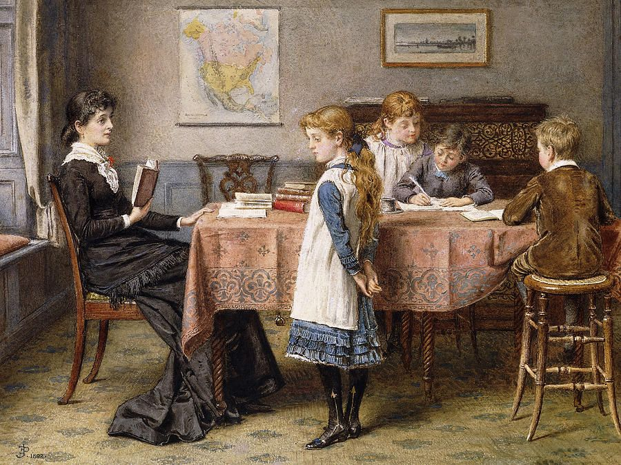

Çocukların Öğrenme Süreçlerindeki Zorluklarına Ruhsal Bir Bakış Açısı
Öğrenme güçlüğü yaşayan çocukların zorluklarının ardındaki ruhsal ve duygusal etmenler, psikanalitik bir bakış açısıyla inceleniyor...
Devamını Oku
Çocuk Terapisinde Psikanalitik Yaklaşım
Bir çocuk bazen öfkesini bağırarak, bazen sessizliğe çekilerek, bazen de oyununda tekrar tekrar kurduğu sahnelerle dile getirir...
Devamını Oku
Ergenlikte Ailelerin Yolculuğu
Ergenlik dönemi çoğu anne baba için yalnızca çocuğun büyüme süreci gibi görünür. Oysa aslında bu dönem, tüm aileyi içine alan bir yolculuktur...
Devamını Oku
CAS Testi ve PASS Bilişsel Müdahale Programı
CAS Testi 5-17 yaş arası okul çağı çocuklarının öğrenmeye ilişkin bilişsel işlemlerini değerlendirmek amacıyla geliştirilmiş olan bir araçtır...
Devamını Oku